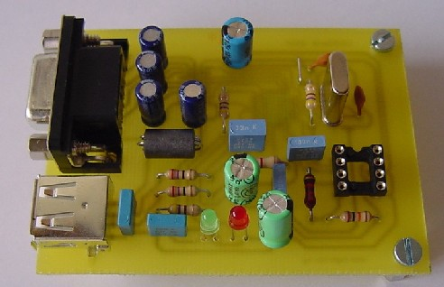
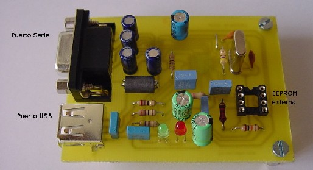
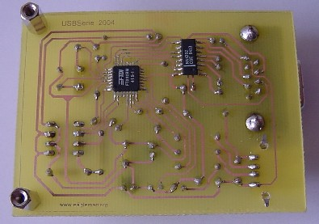
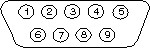
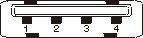

|
Conversor USB-RS232 |
 |
La tarjeta USB-RS232 es un conversor de USB a la norma RS232. El objetivo ha sido desarrollar una tarjeta facil de usar para evaluar el chip de conversion FT232BM, para su posterior uso en otros sistemas para reemplazar el uso del puerto serie por el del USB y ademas que se pudiese usar tanto en plataformas Windows como Linux.
Compatible USB 1.1 y USB 2.0.
Tensión única de alimentación 4,35V a 5,25V.
Descripcion del producto, numero de serie, PID y USB VID almacenados en una memoria EEPROM externa.
EEPROM programable en placa directamente desde USB.
Disponibilidad de las señales Tx, Rx, RTS y CTS.
Indicadores de transmisión y recepción independientes.
Ricardo Gómez González :Esquema, PCB y primeras pruebas
La tarjeta USB-RS232 es HARDWARE LIBRE y tiene una licencia GPL (o lo mas parecido pero en versión Hardware). Esto quiere decir que se distribuye junto con TODOS sus esquemas (esquemáticos, rutado y ficheros de fabricación). Cualquiera tiene derecho a fabricarla, copiarla, modificarla, distribuirla o venderla siempre y cuando vaya acompañada de TODOS los esquemas.


| Puerto Serie | Puerto USB | |
 |
 |
|
|
|
Descarga de ficheros |
| FTDI.lbr | Librería para el EAGLE |
| R9052154.zip | Driver para crear el puerto COM virtual en sistemas Windows |
| usb-serie.sch | Esquemático de la placa en formato EAGLE |
| usb-serie.pdf | Esquemático de la placa en PDF |
| usb-serie.bmp | Esquemático de la placa en formato BMP |
| usb-serie.brd | PCB de la placa en formato EAGLE |
| usb-serie.xls | Lista de componentes en formato excel |
Future Technology Devices International Ltd.: Página del fabricante del integrado FT232BM
18/julio/2007: Añadido el fichero con el listado de componentes.
19/Mayo/2005: Corregido error en los enlaces de los ficheros usb-serie.sch y usb-serie.pdf. (Gracias Crhistian)
19/Abril/2005: Publicada la versión 1.0 del conversor USB-RS232
{kind=link}